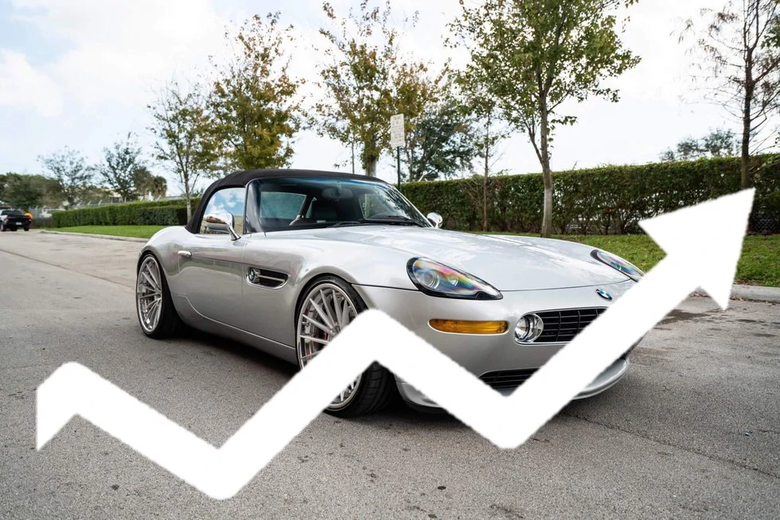
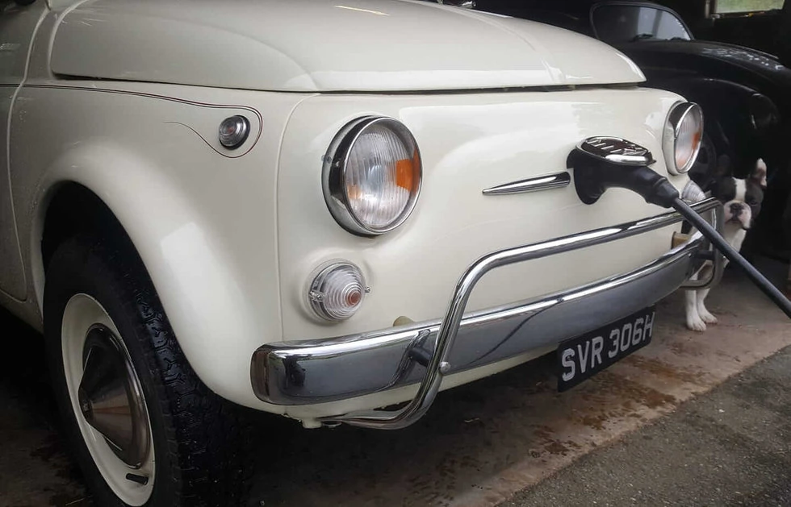

With The Return Of Inflation, Should You Invest In A Classic Car?
The price of classic cars has greatly appreciated with the Covid pandemic. Over the past two years, the oldtimers price index point to particularly strong increases in both Europe and the United States. With the crisis, our cars ones have become safe havens. Will this trend continue with the return of inflation and the international diplomatic crisis? Is it a good time to buy (or sell) a classic car? We take stock of the situation.
Can classic cars hedge against inflation?
The dual effect of covid and the Ukrainian crisis is driving commodity prices to unprecedented levels. And one thing leading to another, it is indeed an inflationary shock that affects Europe and other developed economies. Money loses its value, and safe assets such as classic cars gain in attractiveness. Vehicle prices therefore adjust to, or even exceed, inflation.
This is how the Hagerty index, which reflects the price of oldtimers in the United States, reached its all-time high in February 2022 (74.67). In just 12 months, it has recorded an increase of more than 21%, while the price index rose by “only” 4.7% in the United States in 2021. These increases are particularly significant in the youngtimers, future youngtimers ( 10-15 years of age) and on the most affordable vintage cars (less than 30000 USD).
Beware, however, the market seems to have already anticipated future price increases and the current inflationary shock. In addition, inflation also hits the costs of car maintenance and restoration. For some cars at the project stage, this can result in considerable and difficult to predict costs.
Uncertainties about the future of oldtimers
Classic cars enjoy a growing popularity rating. Symbol of a happier time perhaps, they arouse strong enthusiasm when the clouds accumulate in the news. This symbolic function amplifies the effects of inflation on their valuation.
However, it is essential to consider the purchase of a classic car as a long-term investment. With the automobile industry abandoning fuel engine technologies, collectors will have to adapt. Changes in regulations with possible restrictions on driving, scarcity of expert mechanics in fuel engines, trend towards retrofitting (electrification) of vintage cars…major changes are to be expected. The latter will not necessarily affect the valuation of the vehicles, but will modify our relationship to the old mechanics

Conclusion: anticipationg car valuation changes
Oldtimers should continue to benefit from the current economic context. They are an excellent investment for having fun while hedging against inflation. However, one must be cautious about the increase in maintenance and restoration costs, and favor cars in good condition. It is also important to prepare for the tidal wave of the electric car technologies and its consequences on our relationship to internal combustion engines. The key is to have a clear mind about the purpose of your purchase.
The recent rise in prices, particularly on certain youngtimers, suggests lasting trends. The rarest and sportiest cars among the pre-yoingtimers (vehicles 10 to 20 years old) are expected to experience sensible appreciation. Similarly, youngtimers pre OBD (on-board computer), spared from electronic problems, should remain on a steep upward slope. Conversely, the oldest cars offer incomparable pleasure but have less economic prospects for an investment. It is up to everyone to see how to adjust their strategy in the face of the return of inflation, according to their personal preferences and economic objectives.